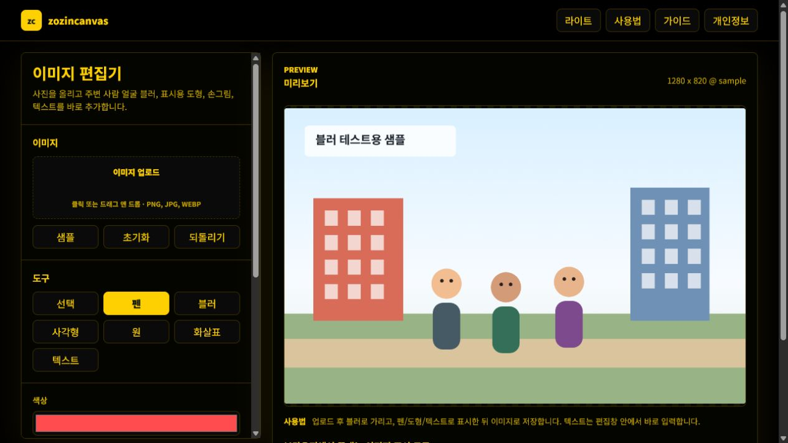

zozincanvas 사용 가이드
블로그나 문서에 이미지를 올리기 전에 빠르게 가리고 표시하는 용도로 만들었다. 설치 없다. 업로드 서버도 없다. 브라우저에서 열고 바로 쓰면 된다.

1. 이미지 올리기
이미지 업로드 박스를 클릭하거나 파일을 끌어다 놓으면 된다. 편집 영역 위에 바로 드롭해도 된다. PNG, JPG, WEBP를 지원한다.
2. 개인정보 가리기
얼굴, 이름, 전화번호, 주소처럼 공개하면 안 되는 부분은 블러 도구로 문지른다. 브러시 크기와 블러 강도를 조절하면 작은 글자부터 큰 얼굴까지 맞춰서 가릴 수 있다.
3. 강조 표시하기
펜, 사각형, 원, 화살표를 쓸 수 있다. 도형은 만든 뒤 선택 도구로 다시 잡아서 위치와 크기를 바꿀 수 있다.
4. 텍스트 넣기
텍스트 도구를 선택하고 캔버스에서 박스를 드래그하면 그 자리에서 바로 입력창이 열린다. 기존 텍스트는 선택 도구에서 더블클릭하면 다시 수정할 수 있다.
5. 색상 고르기
색상은 기본 색상 선택, 프리셋 스와치, 헥사코드 입력으로 설정할 수 있다. 스포이드를 누르면 화면 색상 또는 캔버스 픽셀 색상을 찍어서 가져온다.
6. 저장하기
파일명을 정하고 PNG, JPG, WEBP 중 하나를 고른 뒤 다운로드하면 된다. JPG는 투명 배경이 검게 나오는 문제를 막으려고 흰 배경을 합성해서 저장한다.
운영 원칙
이 도구는 이미지를 외부 서버에 보내지 않는 걸 기본 원칙으로 둔다. 그래서 민감한 스크린샷이나 사람 얼굴이 들어간 사진을 다룰 때도 불필요한 업로드를 줄일 수 있다.
공유 전 확인 순서
캡처 이미지를 공유하기 전에는 먼저 원본에서 가려야 할 정보를 훑는다. 사람 얼굴, 실명, 닉네임, 전화번호, 이메일, 주소, 주문번호, 결제 금액, 내부 URL, 브라우저 탭 제목처럼 작은 영역에 민감한 정보가 들어가는 경우가 많다. 전체 화면을 한 번에 편집하기보다 왼쪽 위에서 오른쪽 아래로 천천히 보면서 빠진 부분이 없는지 확인하는 편이 안전하다.
블러를 한 번만 약하게 적용하면 글자가 남아 보일 수 있다. 작은 글자는 브러시 크기를 줄이고 블러 강도를 높여 여러 번 지나가는 편이 낫다. 얼굴처럼 넓은 영역은 브러시보다 사각형이나 원형 도구로 먼저 표시한 뒤 블러를 입히면 범위를 놓칠 가능성이 줄어든다.
강조 도구를 쓰는 기준
화살표와 도형은 설명을 줄이기 위한 용도로 쓰면 좋다. 오류 메시지, 설정 버튼, 선택해야 할 메뉴처럼 보는 사람이 바로 찾아야 하는 부분에는 화살표를 쓰고, 비교해야 하는 영역은 사각형이나 원으로 감싼다. 너무 많은 강조 표시를 넣으면 오히려 어디를 봐야 하는지 흐려지므로 한 이미지에는 핵심 표시를 3개 안쪽으로 두는 편이 읽기 쉽다.
텍스트를 넣을 때는 이미지 안의 원래 글자와 겹치지 않게 여백에 배치한다. 블로그나 문서에 넣을 캡처라면 짧은 명령형 문구가 잘 읽힌다. 예를 들어 “여기 선택”, “이 값 확인”, “공개 전 삭제”처럼 보는 사람이 다음 행동을 바로 알 수 있는 문구가 좋다.
파일 형식 선택
캡처 이미지나 UI 설명 이미지는 PNG가 선명하다. 사진처럼 색이 많은 이미지는 JPG가 용량을 줄이기 쉽다. 투명 배경이 필요한 이미지나 웹에서 가볍게 쓰려는 이미지는 WebP를 고를 수 있다. 다만 올릴 서비스가 WebP를 받지 않는 경우가 있으므로, 블로그나 커뮤니티에 올리기 전에는 지원 형식을 확인하는 편이 낫다.
브라우저 안에서 처리한다는 의미
zozincanvas는 편집 중인 이미지 파일을 서버로 업로드하지 않는다. 파일 선택은 FileReader, 편집은 Canvas, 다운로드는 브라우저의 데이터 URL을 사용한다. 현재 공개 코드에는 이미지 파일을 보내는 fetch나 XMLHttpRequest가 없다. 그래도 저장한 결과물을 어디에 올릴지는 사용자가 결정해야 한다. 편집 후에도 민감한 정보가 남아 있으면 다운로드 파일을 공유하지 말고 다시 가린 뒤 저장하는 것이 안전하다.
샘플로 먼저 확인해 본 것
처음 열면 1280×820 샘플을 불러올 수 있다. 샘플의 사람 얼굴 하나를 블러로 문지르고, 건물 쪽에는 사각형, 설명할 위치에는 화살표를 넣어 봤다. 선택 도구로 만든 표시를 다시 잡아 이동할 수 있고, 텍스트는 캔버스 안 편집창에서 고친다. 실수했을 때는 되돌리기를 누르면 마지막 작업 하나가 빠진다.
이 순서로 확인한 이유는 실제 캡처를 바로 올렸을 때 도구를 익히느라 원본을 망칠 가능성을 줄이기 위해서다. 샘플에서 블러 강도와 굵기를 한 번 맞춘 뒤 원본으로 바꾸면 작업이 빠르다.